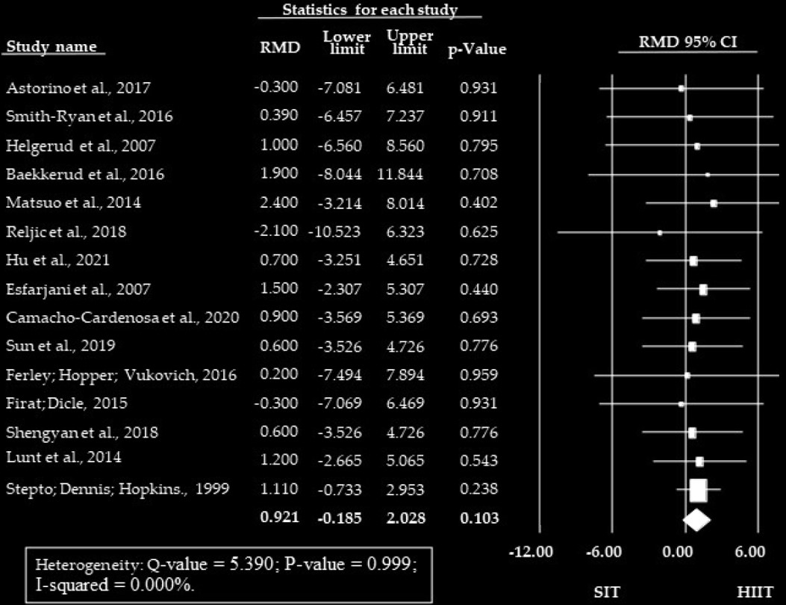
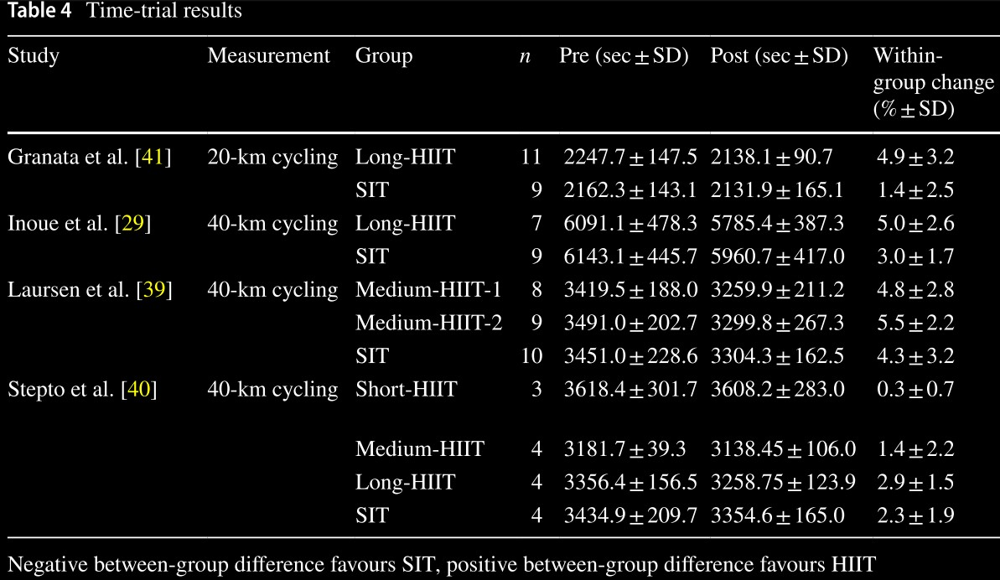
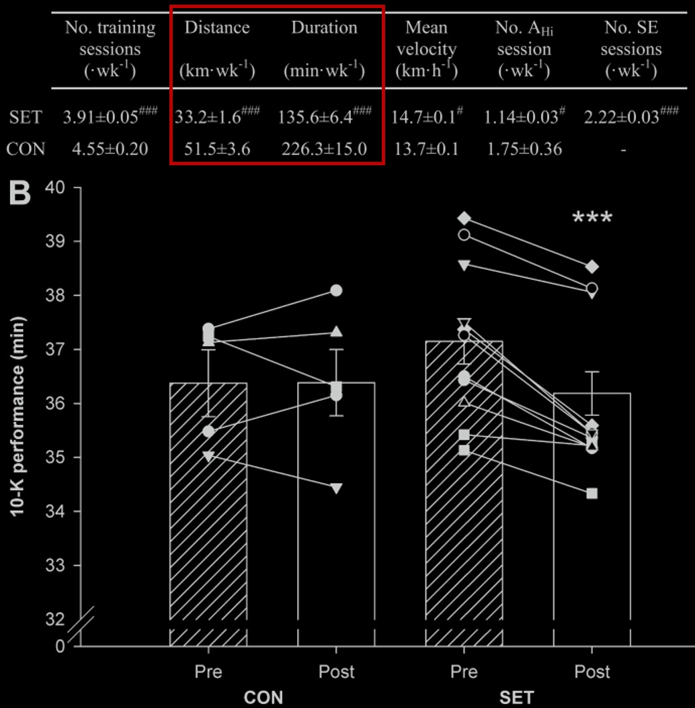
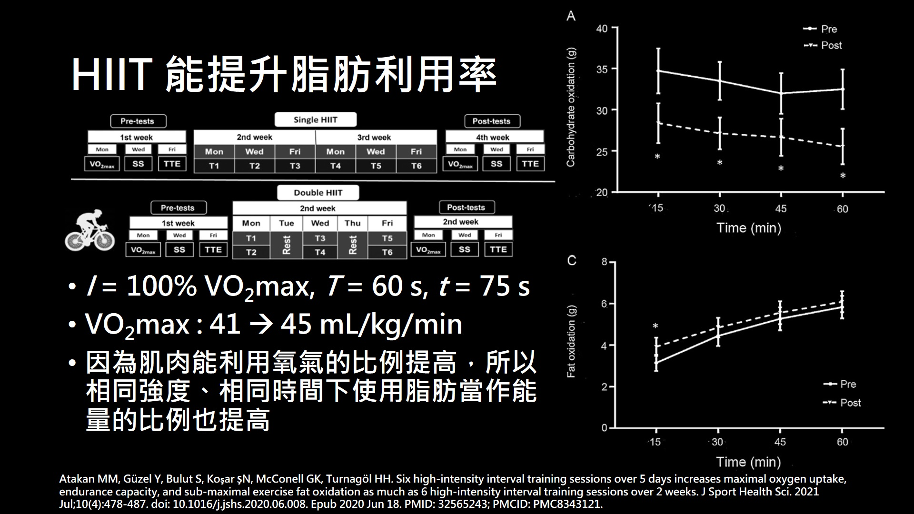
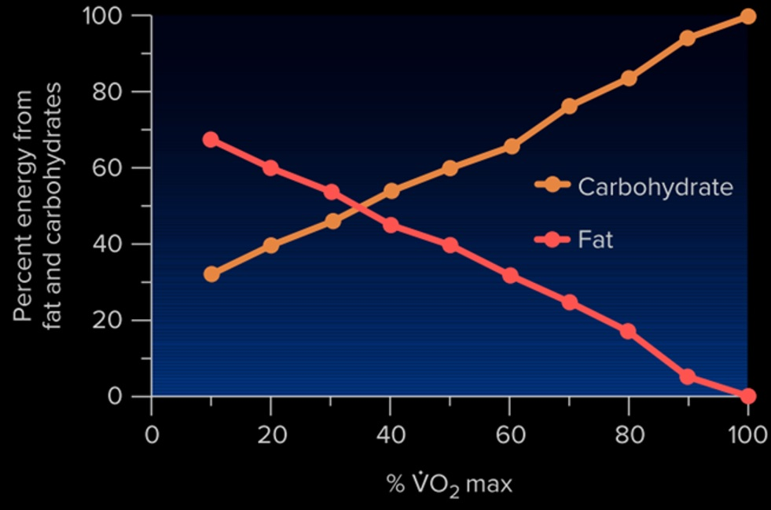
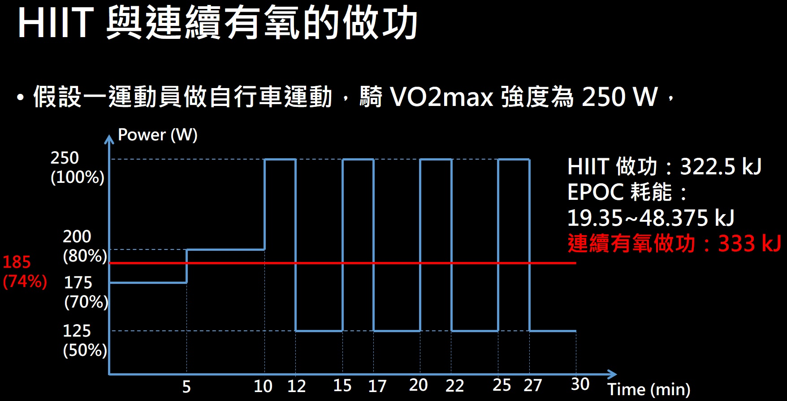
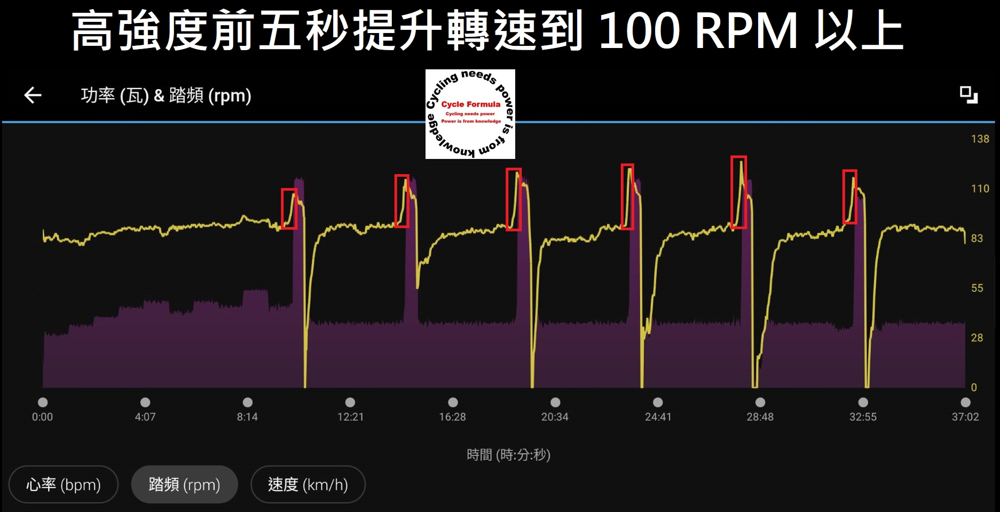

如何使用智慧訓練台操作 HIIT 及訓練和燃脂
一、最大攝氧量與心肺的關係
在運動科學中常常會談論最大攝氧量 VO2max，最大攝氧量從生理學來看就是，組織細胞所能消耗或利用氧的最高值，而在身體裡面氧氣會藉由血液運送，而血液是心臟做泵浦運動送到全身，所以最大攝氧量又等同於，心臟輸出血液的量 X 動脈靜脈血氧差，這個式子又稱作 Fick equation，有興趣的可以自行去找其他資料看他的推導。
所以這邊我們將最大攝氧量與心輸出連結起來，才會說最大攝氧量代表一個人的心肺能力，在醫學與健康方面也發現，最大攝氧量與心血管疾病發病率成負相關，也就是最大攝氧量越高，會有高血壓等心血管疾病的機率越低。
而我們在測驗最大攝氧量時，也只需要量測吸入與呼出的氧氣量即可，不需要去測心臟血液的輸出量。
二、HIIT 課表的變數與分類
那麼想必大家都有聽過 HIIT，可以提高你的最大攝氧量，而且 HIIT 課表通常時間也短很有效率，那麼我們來看一下什麼叫做 HIIT 課表。HIIT 課表中主要有四個變數，強度 I、高強度的時間 T 、休息時間 t、和高低強度所重複的組數 n，當然最重要的就是高強度與其時間，這兩個會決定這次課表的訓練量，分類如下表所示。
| I (%VO2max) | T(min) | t*(min) | n | |
|---|---|---|---|---|
| Short HIIT | 100 | 1 | 4 | 12 |
| Medium HIIT | 90 | 2 | 3 | 12 |
| Long HIIT | 85 | 4 | 1.5 | 8 |
| MIIT | 80 | 8 | 1 | 4 |
| SIT | 170 | 0.5 | 4.5 | 12 |
其中若高強度非常高且時間非常短，則稱為衝刺區間訓練 (SIT)。一般高強度的持續時間在 HIIT 來說，是不會超過 5 分鐘的 且根據強度不同，在課表中高強度要維持的時間也不同，低強度的恢復時間也不一樣，所以這邊根據高強度時間做區別，分別在定義出這些 HIIT 方便後面使用，其中如果高強度時間低於 60 秒，我們就稱為衝刺間歇訓練 (SIT)。
三、HIIT 與 SIT 課表的效果
那麼我們先來看 HIIT 與 SIT，對於提高最大攝氧量的效果如何。圖一是從這邊論文中所擷取的圖，這篇論文整理了許多論文的研究結果，並將其結果畫成最右邊的圖表示，可以看到就平均值的差而言幾乎是為零，也就是表示這兩種間歇訓練，對於提高最大攝氧量的效果是差不多的，當然整體看起來是比較偏 HIIT 一點。所以可知只要高強度的時間有達到，那麼選擇 HIIT 或 SIT 都可以，單看你喜歡做哪一種間歇課表而已。
|  |
|---|
| 圖一：HIIT 與 SIT 的進步幅度 [1] |
那麼再來看另外一篇論文的研究，這邊論文則是將 HIIT 再去做細分，然後看看對於最大有氧強度的提升效果，MAP 為騎車的最大有氧強度，MAV 為跑步的最大有氧強度。這邊雖然圖二有整理出了很多結果，但是因為起始能力不同 能進步的幅度也不同，所以只有看紅框圈起來的部分，可以看到不論是跑步或是騎車，SIT 與 HIIT 對於最大有氧強度的提升，兩者的效果也是沒有差太多的，跟前面那篇論文得到相同的結果。
 |
|---|
| 圖二：經過 HIIT 訓練後最大攝氧量的瓦數與速度的進步 [2] |
那麼再來看看加入這兩種課表對於，所需時間較長的表現會有怎麼樣的效果。20 與 40 公里的個人計時，普通人的時間大概分別會落在，40 與 75 分鐘左右，同樣的會希望前測的能力都差不多，再來比較後測後能夠進步多少。不過很可惜的這篇論文沒有相關資料，那麼對於這麼長時間的賽事，間歇訓練也是能增加比賽表現，即便一次課程的高強度總時間沒那麼長。
|  |
|---|
| 圖三：經過 HIIT 訓練後自行車個人計時的進步 [2] |
那麼再來看看對於 10 km 跑步比賽的效果，另外這篇論文將實驗組分成兩組，沒間歇訓練的組別為控制組，對照組則是有間歇訓練的組別，其間歇課表為 30 秒做 8-12 組的 SIT。結果發現平均來看控制組成績沒顯著差異，而對照組平均則是進步了一分鐘以上，甚至平均成績勝過了控制組，所以即便是約 40 分鐘的運動長度，SIT 也能顯著的提升跑者表現。而且 10 k 跑 36 分鐘也算是能力很高的跑者了，所以可以知道若要預測跑者的能量，最大攝氧量只是其中一個指標而已，在這個研究中 更傾向是肌肉能適應更高的強度。
|  |
|---|
| 圖四：經過 HIIT 訓練後 10 km 跑步的進步 [3] |
除了運動表現外 HIIT 也能提高最大攝氧量，也就是能提高組織細胞利用氧的能力，所以當最大攝氧量提高之後，在相同強度下能利用氧的能力變高了，而分解脂肪需要比有氧醣解消耗更多的氧。像這篇論文就去研究了兩種 HIIT 課表，都是兩周作六次但一種是一天做兩次 HIIT 課表，HIIT 課程包含了前面所提到的那幾種，並且再加入飲食的控制，發現兩者的最大攝氧量都有 6 的提升，數值從原本的 41 到 45 和從 45 到 48，這個數值大概就是生活習慣較好的一般人，而且也因為身體利用氧的能力變高了，所以在相同強度下 脂肪提供能量的占比也變高了。
|  |
|---|
| 圖五：經過 HIIT 訓練後的脂肪消耗 [4] |
四、HIIT 能消耗比較多的脂肪嗎
一般再說 HIIT 能夠更有效燃脂的說法，多數會圍繞在運動後的過耗氧量，其效果可以維持一段時間，強度越高時間越久，對於熱量消耗而言除了運動當下的消耗外，EPOC 也會有後燃效應，多出至多 15% 的熱量消耗，但是一般 HIIT 沒辦法做太久，也無法天天做。 在此我們先來看不同強度下的醣類與脂肪消耗，因為醣類與脂肪氧化時所需要的氧氣不同，產生的二氧化碳量也不同，所以可以透過 VO2 與 RER 來推算比例，當強度高過最大攝氧量時因為能量來不及供應，所以會開始有大量的無氧醣解提供能量，在此強度下脂肪所提供的能量就非常少，單純從強度來看的話，大約在 35% 最大攝氧量時，脂肪跟碳水的消耗比例約是 1:1。
|  |
|---|
| 圖六：不同強度下的醣類與脂肪消耗比例 [5] |
當然會影響脂肪消耗的因素有非常多，除了運動種類與運動型態以外，運動前後的飲食、性別、環境及本身狀態，都會影響脂肪的消耗。所以在這會假設只有運動的型態不同，也就是只比較 HIIT 與中強度的連續運動，其他條件都一樣的話，哪種型態消耗脂肪比較多，而在運動當下能控制的就是運動時間及運動強度，所以這邊就根據運動強度來計算熱量消耗與脂肪消耗。
|  |
|---|
| 圖七：HIIT 與連續有氧的做功 |
我們就來算一下這兩個課表的做功，縱軸的數字是時間 括號為相對 VO2max 強度，橫軸是時間 所以所圍的面積就是做功，在這個情況下確實 HIIT 做功加上 EPOC，是比連續中強度運動還要多的，中強度可以到 200 W 半小時就可消耗 360 kJ ，這樣就跟 HIIT 的做功差不多。 再來根據強度所消耗的醣類與脂肪比例換算，這邊假設 EPOC 都是消耗脂肪，至於實際上是不是我沒有很清楚就是了，所以算出來後這個課表 HIIT 脂肪提供了，63.75~112.125 kJ 的能量。而中強度的連續運動則是提供 86.58 kJ，在這強度下只要再多做 9 分鐘，那連續有氧的脂肪消耗就會跟，HIIT 的最大消耗量一樣，所以在相同的時間下，HIIT 是有可能消耗更多脂肪的，當然連續有氧時間可以拉更長，所以減脂還是建議做低強度長時間的有氧運動。
五、智慧訓練台如何操作 HIIT 課表
疫情過後室內訓練台雨訓練軟體，都如雨後春筍般地冒出來，台灣也滿多家廠商在做訓練台的，以前還有非智慧型訓練台，就是要自己去增加阻力的。現在幾乎都是智慧訓練台搭配訓練軟體，可以根據遊戲內的坡度自動調整阻力，在做這個課表時我是會開啟 ERG MODE，也就是先自己制定好課表，然後藉由軟體或是碼表傳指令給訓練台調整阻力。ERG MODE 算是一個很嚴格的教練，不過真的沒辦法做下去的話就直接停腳，然後等這階段時間跑完就好了。不過 ERG MODE 做 HIIT 有些人會不太習慣，因為阻力變化太劇烈，變高強度時根本踩不下去，這跟前面提到的調整阻力有關，這邊來看一下我是怎麼避免這問題的。這張圖紫色區域是功率，黃線是踏頻，可以看到我在每一次高強度的幾秒鐘前，都會將踏頻拉到 100 以上，在高強度的功率也幾乎是貼近預定的瓦數，只有最後一組真的太累偷偷降低了瓦數，每一組是維持 30 秒的時間，稱為衝刺訓練。
|  |
|---|
| 圖八：智慧訓練台如何操作 HIIT 課表 |
而之所以要提高到這麼高是因為，瓦數就是力矩跟踏頻的內積，而力矩又是力臂長跟施力的外積，所以當力臂長與角度固定時，力矩就會與力成正比，這邊的力就是阻力，所以當踏頻固定，瓦數突然變得很高的時候，就表示阻力會瞬間變得很大。所以當要進入高強度階段踏頻沒有拉起來的話，那進去後幾秒踏頻通常會變得很低，變得太低就會非常難踩下去甚至定桿，這時就沒辦法練到高強度的階段，另外就是在高強度中間中斷然後繼續，這個時候阻力還是這個高，所以會非常難恢復訓練，所以在踩 HIIT 課表時高強度階段還是盡量撐完。
Ref:
[1] de Oliveira-Nunes SG, Castro A, Sardeli AV, Cavaglieri CR, Chacon-Mikahil MPT. HIIT vs. SIT: What Is the Better to Improve VO2max? A Systematic Review and Meta-Analysis. Int J Environ Res Public Health. 2021 Dec 12;18(24):13120. doi: 10.3390/ijerph182413120. PMID: 34948733; PMCID: PMC8700995.
[2] Rosenblat MA, Perrotta AS, Thomas SG. Effect of High-Intensity Interval Training Versus Sprint Interval Training on Time-Trial Performance: A Systematic Review and Meta-analysis. Sports Med. 2020 Jun;50(6):1145-1161. doi: 10.1007/s40279-020-01264-1. PMID: 32034701.
[3] Iaia FM, Thomassen M, Kolding H, Gunnarsson T, Wendell J, Rostgaard T, Nordsborg N, Krustrup P, Nybo L, Hellsten Y, Bangsbo J. Reduced volume but increased training intensity elevates muscle Na+-K+ pump alpha1-subunit and NHE1 expression as well as short-term work capacity in humans. Am J Physiol Regul Integr Comp Physiol. 2008 Mar;294(3):R966-74. doi: 10.1152/ajpregu.00666.2007. Epub 2007 Dec 19. PMID: 18094063.
[4] Atakan MM, Güzel Y, Bulut S, Koşar ŞN, McConell GK, Turnagöl HH. Six high-intensity interval training sessions over 5 days increases maximal oxygen uptake, endurance capacity, and sub-maximal exercise fat oxidation as much as 6 high-intensity interval training sessions over 2 weeks. J Sport Health Sci. 2021 Jul;10(4):478-487. doi: 10.1016/j.jshs.2020.06.008. Epub 2020 Jun 18. PMID: 32565243; PMCID: PMC8343121.
[5] Exercise Physiology: Theory and Application to Fitness and Performance 10th